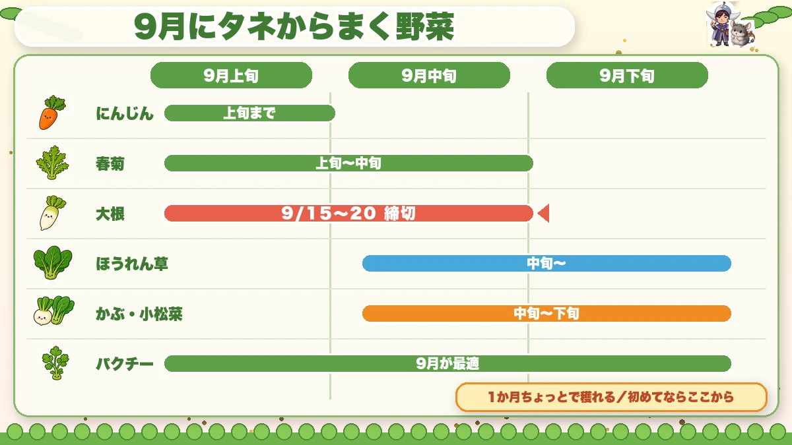
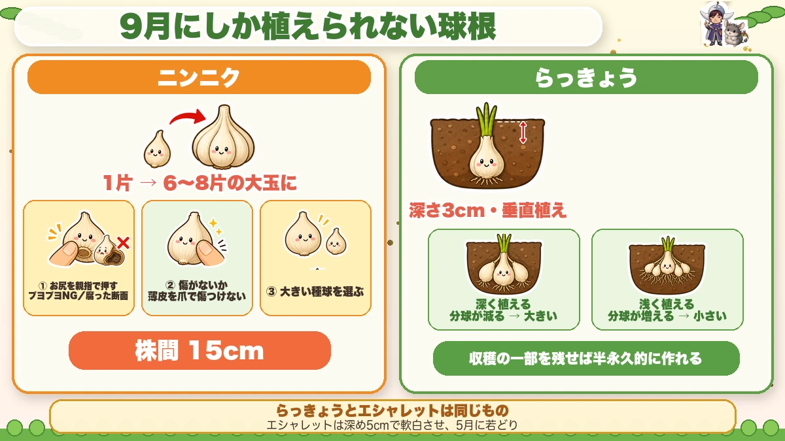
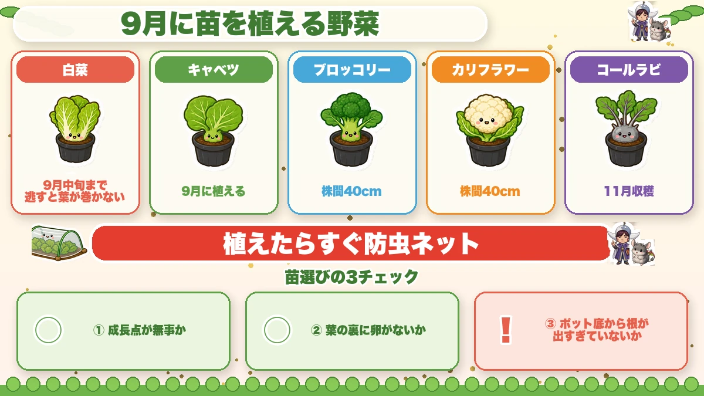
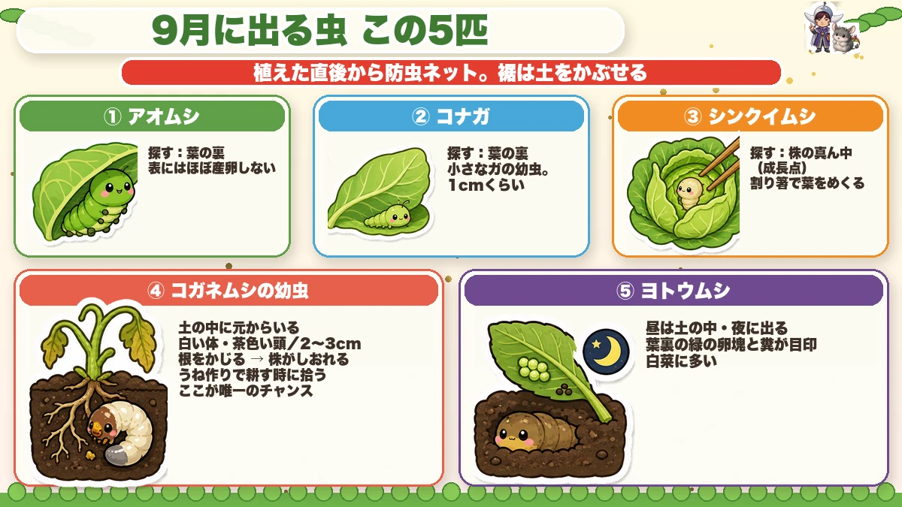

Another week's delay changes your winter table 🌱 September's sowings
🗨️ "It's still warm — maybe I'll wait a bit."
🗨️ "What am I actually supposed to plant now?"
🗨️ "I planted garlic last year and half of it never came up."
Hello, I'm Eiko. Eight years of growing vegetables organically and without pesticides, and a teaching licence in science.
The point, up front:
"It's still warm, I'll wait a bit" is the most dangerous sentence of the month.
Because plants stop growing below about 10 °C — which means winter crops are in a race to reach size before the cold arrives.
A week lost in spring is recoverable. A week lost now is not. It becomes a week's delay to the harvest, and in a bad case there is no harvest at all ☺️
The garden this month
Still warm — and the days are definitely shortening.
The awkward part: insect numbers rise as it cools. There are more insects now than in high summer, and seed that germinates perfectly well can be eaten away to nothing.
So September is a month of sowing and defending at once.
Sowing from seed

What this diagram says （図解の文字）
- What to sow from seed in September
- Carrots — to early September ／ chrysanthemum greens — early to mid ／ mooli — deadline mid September
- Spinach — from mid ／ turnips and mustard greens — mid to late ／ coriander — September is ideal
- Ready in a little over a month — start here if it's your first time
Mooli — the firm deadline
Finish sowing by the middle of the month. Five seeds (or three) per station, stations 20–30 cm apart, and sow deep — the seed dislikes light, and shallow sowing gives uneven germination.
Spinach — the one people fail at
Spinach is the commonest "it didn't germinate" crop, and the cause is nearly always one thing: acid soil.
Spinach wants pH 6.5–7, very slightly alkaline, and rain pushes soil the other way. Get that wrong and no amount of care makes it germinate.
So spinach is the exception to "go easy on the lime". A month before sowing, mix in, per square metre, 2 litres of well-rotted manure, 200 ml of organic feed and 200 ml of lime.
And a sowing trick worth having: mark a chopstick 1 cm from the end and push each seed in to the mark. Pushed in with a finger, the seed sticks to you and comes back out, and the depths vary. One chopstick puts every seed at the same depth.
Then draw the soil over with a palm, press firmly, water once, and lay fleece with soil along the edges.
Finally, a harvest trick: expose the crop to cold for about a week before cutting. Spinach converts reserves to sugars to protect itself from frost, and the difference is remarkable. Don't overdo it — a week, no more.
Turnips and mustard greens — start here
Sown now, ready in a little over a month. Keep the insects off and they essentially don't fail — and freshly cut, they're nothing like a shop's.
If winter growing sounds difficult, grow one bed of these. A result in a month is the most encouraging thing there is ☺️
Chrysanthemum greens
15–20 °C; above 35 °C the germination rate collapses, so in a hot year, wait. Germination is about 50%, so sow thickly, cover barely, and firm hard.
Coriander
Divisive, and interesting to grow. Sowable most of the year, and September is the best moment: leaves to pick from mid autumn, through the winter, then a surge of growth in spring and a heavy cut — followed by flowers and seed. And the seed is the spice itself, usable in cooking and for next year's sowing.
One habit: coriander is happier in a group. Sow it in a patch rather than spaced out.
Carrots
Early September at the latest, and germination is 90% of the work — shallow, firmed, and never dry.
The bulbs that can only go in now

What this diagram says （図解の文字）
- Bulbs you can only plant in September
- Garlic — one clove → a head of 6–8 cloves
- ① press the base with a thumb — soft is a no ／ rotten cut surface
- ② check for damage — don't nick the skin with a fingernail
- ③ choose large seed bulbs ／ 15 cm spacing
- Shallots — 3 cm deep, planted upright
Garlic
One clove becomes a head of six to eight. Three checks when buying:
- Press the base with a thumb — soft means rot inside
- Look for damage, and don't nick the papery skin with a fingernail while separating cloves
- Choose large bulbs — bigger cloves start better
15 cm spacing, pointed end up.
Shallots
3 cm deep, planted upright. Planted deeper they divide less, which gives larger individual bulbs.
Plants to put in

What this diagram says （図解の文字）
- Plants to put in during September
- Chinese cabbage — by mid September; miss it and the heads won't form
- Cabbage ／ broccoli, 40 cm spacing ／ cauliflower, 40 cm ／ kohlrabi, harvest late autumn
- Net them immediately after planting
- Three checks when choosing a plant — ① is the growing point intact?
- Chinese cabbage — by mid September. Miss it and the heads never form
- Cabbage, broccoli, cauliflower — 40 cm spacing
- Kohlrabi — harvest in late autumn
And without exception: net them the moment they're planted.
Five insects to know

What this diagram says （図解の文字）
- Five insects to expect in September
- Net from the moment of planting; bury the hem in soil
- ① Cabbage white caterpillar — look on the undersides; they almost never lay on the upper side
- ② Diamondback moth larva — undersides; about 1 cm
- ③ Heart borer — look in the centre of the plant, at the growing point; part the leaves with a chopstick
- Cabbage white caterpillars — look on the undersides of leaves. They almost never lay on the upper surface
- Diamondback moth larvae — undersides again; small, about 1 cm
- Heart borers — look into the centre of the plant. Part the leaves gently with a chopstick
- Aphids — the growing point
- Cutworms — a plant felled at the base overnight; dig a centimetre down beside it
And the single best measure: netting, on the day you plant, with the hem buried.
The science: why one week matters 🔬
Plants don't grow at a constant rate. Growth tracks temperature, and below about 10 °C it effectively stops.
So the growing season doesn't end on a date — it tapers. Each week in autumn is worth less than the week before it, because the days are shorter and cooler.
Which means a week lost at the start of September costs more than a week at the start of May: in May the following weeks are getting better, and in September they're getting worse.
A heading crop needs a certain number of leaves before it can heart, and it can only make them while it's warm. Delay the start and you don't shift the finish — you shorten the growing time ☺️
To sum up
- ✅ "Wait a bit" is the dangerous thought this month
- ✅ Growth stops below about 10 °C — autumn is a race
- ✅ Sow early so you can sow again if it fails
- ✅ There are more insects now than in high summer
- ✅ Mooli by mid September, sown deep
- ✅ Spinach needs lime — it's the exception
- ✅ Use a marked chopstick for even sowing depth
- ✅ Chill spinach for a week before cutting to sweeten it
- ✅ Turnips and mustard greens crop in a month — start there
- ✅ Coriander prefers being sown in a group
- ✅ Garlic: firm base, undamaged, large bulbs, 15 cm apart
- ✅ Chinese cabbage by mid September or it won't heart
- ✅ Net on the day you plant, hem buried
- ✅ Autumn weeks are worth less than spring weeks
You don't have to do all of it. Sow one row of turnips this weekend. You'll be eating them in a month 🌱
Thank you for reading!